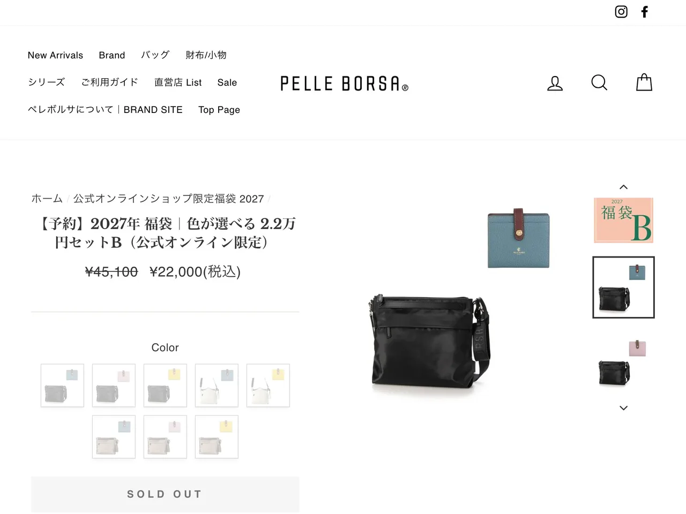

ペレボルサの福袋2027は、2026年11月28日時点で公式オンラインショップの全5セットに「SOLD OUT」と表示されています。予約の案内は12月2日23:59まででしたが、予定数に達し次第終了する企画です。注文済みなら、12月中旬頃の配送予定と決済のタイミングを確認しておきましょう。
01予約はいつまで？ 店舗でも買える？
予約期間は2026年11月24日12:00から12月2日23:59までと案内されていました。販売窓口はペレボルサの公式オンラインショップ限定です。この福袋について、店頭では問い合わせに対応していません。
注意公式が案内した終了日時は受付期間の上限です。11月28日に、受付開始後の公式商品ページで全5セットの完売表示を確認しました。
02福袋の中身と価格を比較
公式の商品名では、同じA・Bでも22,000円と33,000円で中身が異なります。注文内容を見直すときは、セットの記号と価格を合わせて確認してください。以下の価格は税込です。
| 2027年版 | 税込価格 | 中身 |
|---|---|---|
| 2.2万円セットA | 22,000円 | Cheers 5208、Reinette Goods 4718 |
| 2.2万円セットB | 22,000円 | Cheers 4685、Reinette Goods 4781 |
| 3.3万円セットA | 33,000円 | Cheers 4699、Reinette 4795 |
| 3.3万円セットB | 33,000円 | Cheers 4699、Shiny Puffy 5837、Fine Goods 5449 |
| 3.3万円セットC | 33,000円 | Cheers 4699、Bloom 5835、Reinette Goods 4797 |
22,000円のA・Bと33,000円のAは2点とも色の選択肢がありました。33,000円のB・Cは3点入りで、このうち2点に色の選択肢があります。BのShiny Puffyはシルバー、CのBloomはセージの固定です。


03価格差11,000円はどう比べる？
同じ22,000円なら、持ち歩く荷物と財布の幅で比較できます。AのCheers 5208は外寸の幅32cm、奥行12cm。BのCheers 4685は幅27cm、奥行7cmで、長さ約80〜120cmのショルダーストラップが付く仕様です。財布はAが幅20.5cm、Bが幅10.5cmです。厚みのある荷物を入れるならAの奥行、肩掛けの長さや財布のコンパクトさを重視するならBの寸法が比較の目安になります。
22,000円から33,000円に上げた場合の価格差は11,000円です。 33,000円のAも2点入りなので、点数を増やすための差額ではありません。33,000円のB・Cはいずれも3点入りで、Cheers 4699は共通です。B・Cの価格は同じなので、残り2点を普段の服装や持ち物と合わせやすいかで比較できます。
042026年版と2027年版の予約を比較
| 項目 | 2026年版（2025年受付） | 2027年版（2026年受付） |
|---|---|---|
| 予約開始 | 11月21日12:00 | 11月24日12:00 |
| 公式の受付期限 | 11月30日23:59 | 12月2日23:59 |
| 販売窓口 | 公式オンラインショップ限定 | 公式オンラインショップ限定 |
| 配送予定 | 12月中旬頃、配送希望日指定不可 | 12月中旬頃、配送希望日指定不可 |
2027年版は、2026年版より受付開始の月日が3日後、案内上の期限は2日後でした。両年とも予定数に達し次第終了で、決済完了で注文確定、カート投入だけでは在庫を確保できない条件も共通です。
05注文済みの人が確認すること
お届けは12月中旬頃の予定で、希望日の指定はできません。 天候や交通状況によって遅れる場合があります。贈り物などで渡す日が決まっている場合は、予定日に間に合う前提で準備せず、配送状況を確認してください。
他の商品との同梱や各種クーポンの利用はできません。注文確定は決済完了時で、ショップは注文内容を確認してから決済します。注文日と決済日がずれたり、商品到着より前に引き落とされたりする場合があります。
06よくある質問
福袋は12月2日まで予約できますか？
公式案内の期限は12月2日23:59でした。予定数に達し次第終了する企画で、11月28日時点では全5セットが完売表示です。
配送希望日は指定できますか？
指定できません。12月中旬頃の配送予定で、天候や交通状況により遅れる場合があります。
キャンセルや返品はできますか？
キャンセルは注文から5時間以内にシステム上で操作します。購入者都合の返品・交換はできません。
07まとめ
結論ペレボルサの福袋2027は11月28日時点で全5セットが完売表示です。注文済みの人は、価格とセット記号で中身を確認し、12月中旬頃の配送予定を確認してください。
ほかのブランドも探す場合は、2027年福袋の予約・抽選日程で企画ごとの受付期間を確認できます。